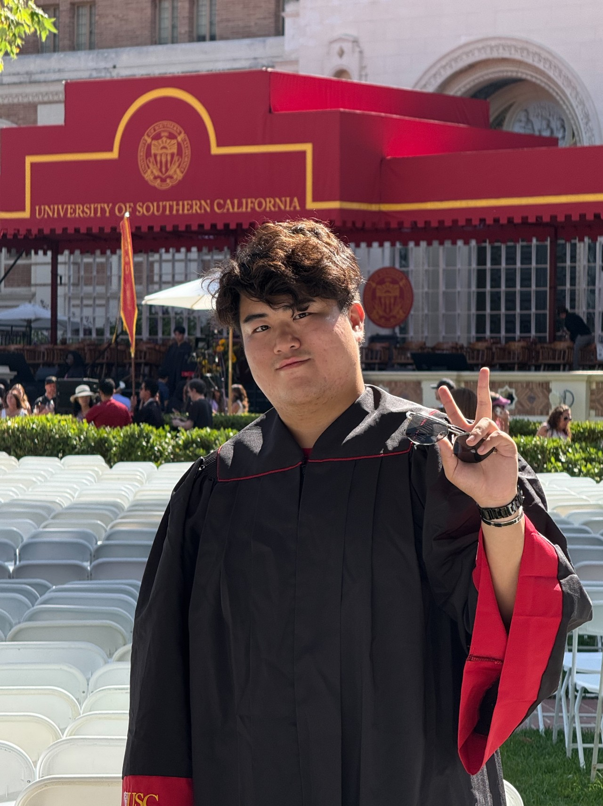

Yung-Hsiang Wang (Richard)
王詠翔
Last updated on
About Me
Master’s student in Computer Science at USC. Completing a four-year Computer Science program in just three years at National Chung Hsing University with a GPA of 4.15/4.3. Passionate about Computer Graphics, Operating Systems and Numerical Optimization, with experience in systems programming and academic research. Outside of academics, I enjoy playing bass guitar, chess, and audio engineering for PA systems.
Education
Projects
WizardChess – Vulkan 3D Chess Game

- Tech Stack: C++, Vulkan, Computer Graphics
- Developed a 3D chess game engine using C++14 and Vulkan, featuring real-time rendering of chess pieces and board.
- Implemented custom model loading, texture mapping, and shader-based rendering for realistic visuals.

User-Level Page Cache Architecture

- Tech Stack: C, SPDK(Intel API), Operating System
- Implementing data access module with user-level dm-cache
- Optimizing system performance by minimizing kernel call overhead
Gas Order Line Bot
- Tech Stack: Line Bot API, Google Apps Script
- Implemented a simple database using Google Sheets to manage order information
- Automated data processing with Google Apps Script to send receipts via Line bot.
- Developed a tutorial website for building and deploying Line bots, with step-by-step instructions, code examples, and troubleshooting tips. [LINK]
Projected Gradient Method for Non-negative Matrix Factorization
- Tech Stack: Python, Numerical Optimization
- Conducted methodology review and experimental verification
- Documented process and findings in detailed technical reports
Convex Function Optimization
- Tech Stack: Python, Numerical Optimization
- Conducted a comparison of different gradient approaches, highlighting their strengths and weaknesses
- Implemented the Armijo rule to improve optimization efficiency by 40%
Academic Experience
Teaching Assistant
CS3259 Computer Architecture (Fall 2023)
National Chung Hsing University (Taichung, Taiwan)
- Course lecturer: Prof.
Yi-Chung Chen - Designed practice problems and provided tutoring support
- Assisted students with technical concepts and problem-solving
CS1307 Discrete Mathematics (Spring 2022)
National Chung Hsing University (Taichung, Taiwan)
- Course lecturer: Prof.
Yi-Chung Chen - Designed practice problems and provided tutoring support
- Assisted students with technical concepts and problem-solving
Library Web Developer
Web Development and Maker Courses TA (Aug 2023 - Aug 2025)
- Maintained library website and resolved technical issues
- Led workshops on 3D printing and sublimation machine operation
Awards & Honors
Academic Excellence Award (Spring, 2023)
National Chung Hsing University (Taichung, Taiwan)
- Awarded for ranking 2nd out of 38 students in the College of Electrical Engineering and Computer Science.